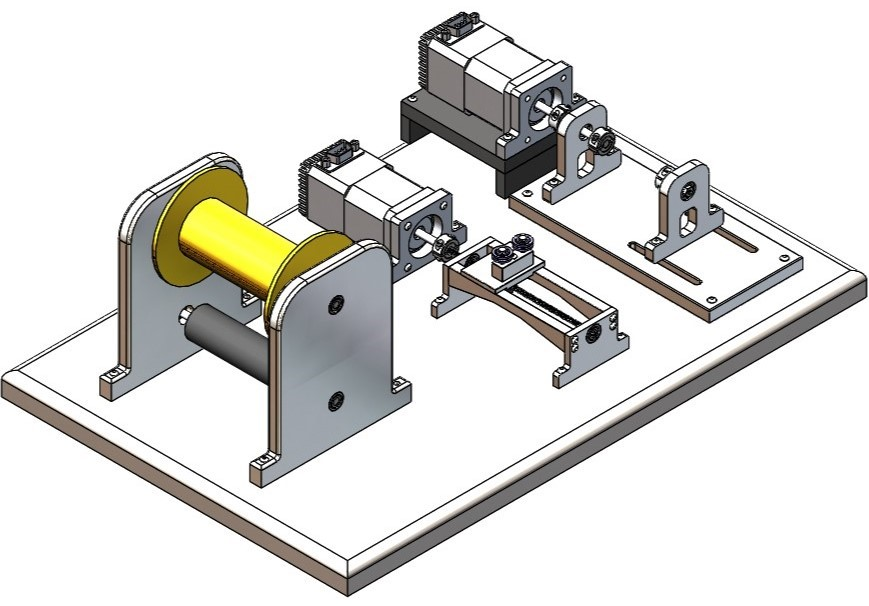
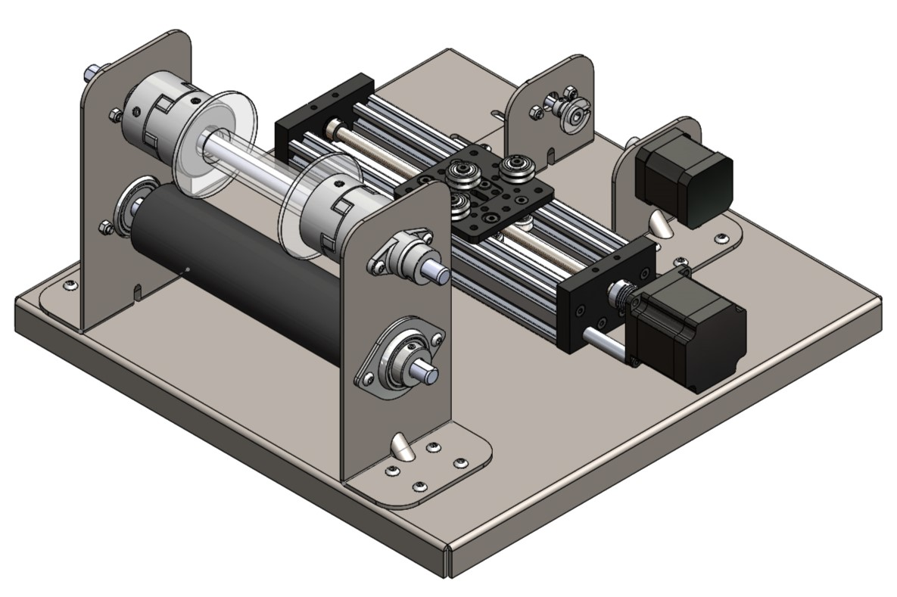
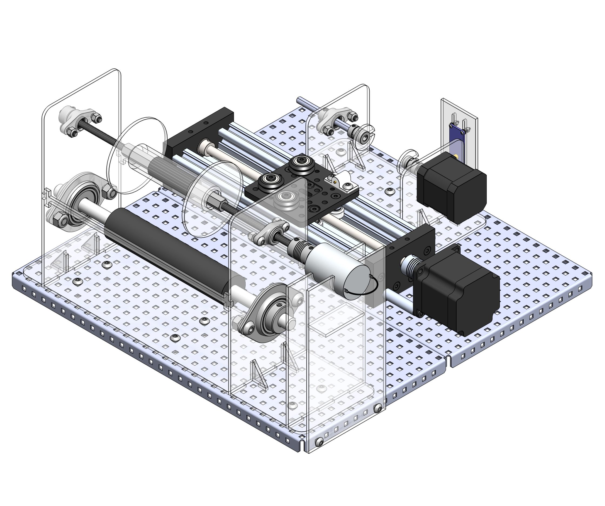

Coil Winder
Project Overview
As part of my fourth-year capstone project, I designed and prototyped an automated coil winder that could create custom magnetorquers and avoid the exuberant cost of purchasing them. Magnetorquers are the actuators used within many small satellites’ attitude determination and control systems. They are essentially solid core solenoids that produce magnetic fields which interact with the earth’s magnetic field to stabilize or pose the satellite. They are composed of metallic rods with numerous layers of magnet wire wrapped around them.
Design
1st Iteration

The first iteration was for conceptual purposes. It allowed me to consider the various components of the apparatus that needed to be designed. These components were determined to be the spool assembly, linear actuator, rod rotator assembly, and base plate. The spool assembly would provide a structure for the magnet wire supply spool to be mounted. The linear actuator would allow for the axial traversing of the wire while the rod rotator assembly would do exactly as its name suggests. Finally, the base plate would allow for each of these components to be anchored such that they could accurately interact with one another.
2st Iteration

The second iteration involved designing the supporting structures and base out of laser-cut sheet metal and sourcing real components. An off-the-shelf linear actuator was also sourced to ensure accuracy while saving on cost. The next big change was incorporating a shaft coupler system into the spool assembly. This would allow for spools of magnet wire to be interchanged relatively easily.
Final Design

The final changes to the design were the implementation of cheaper and more effective alternatives for the coupler system, assembly supports, and base plate. The wire supply spool was mounted onto a threaded rod that had a Dremel rubber drum and coupler nuts on either side. Tightening the coupler nuts forced the rubber to expand and secure the spool to the rod. This was a much simpler system than the couplers as only different drum sizes were required for different spool sizes as opposed to new shafts and couplers. Since the mass of the components within the subassemblies was not excessive, the sheet metal was overkill. Three-millimetre laser-cut acrylic would provide enough support and was a fraction of the cost. Finally, if it were to be found upon testing that the locations of the subassemblies needed to be altered, a new base would have to be designed and ordered. To prevent this potential cost, metal pegboards were incorporated instead.